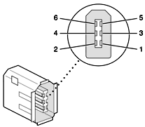

| PATH |

The FireWire connector has six contacts, as shown in Figure 3-2. The connector signals and pin assignments are shown in Table 3-2.
Figure 3-2 FireWire connector
When the computer is on, the power pin provides a maximum voltage of 24 V (no load) and up to 8 W total power (shared by both connectors). Zero voltage is present at the power pin when the computer is in Sleep mode or when it is off.
ImportantThe FireWire PHY on the iMac does not operate from external power. As long as the computer is plugged into an active AC power outlet, the FireWire PHY is active and the FireWire bus remains connected. If AC power is interrupted, the PHY will stop operating and data on the bus cannot be repeated. <8bat>s
Pin 2 of the 6-pin FireWire connector is ground for both power and inner cable shield. If a 4-pin connector is used on the other end of the FireWire cable, its shell should be connected to the wire from pin 2.
The signal pairs are crossed in the cable itself so that pins 5 and 6 at one end of the cable connect with pins 3 and 4 at the other end. When transmitting, pins 3 and 4 carry data and pins 5 and 6 carry clock; when receiving, the reverse is true.
For additional information about the FireWire interface and the Apple APIs for FireWire device control, developers should refer to the resources listed in "FireWire Interface".